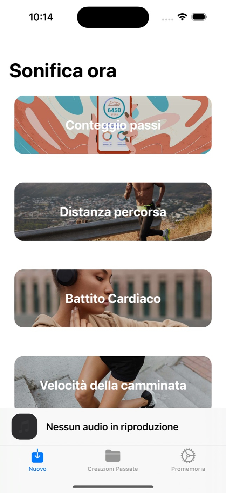
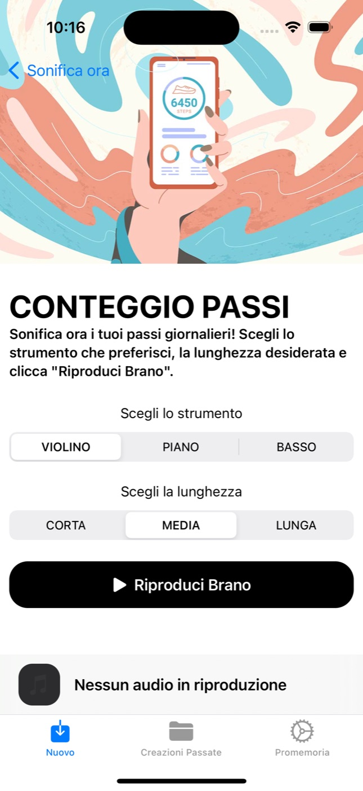
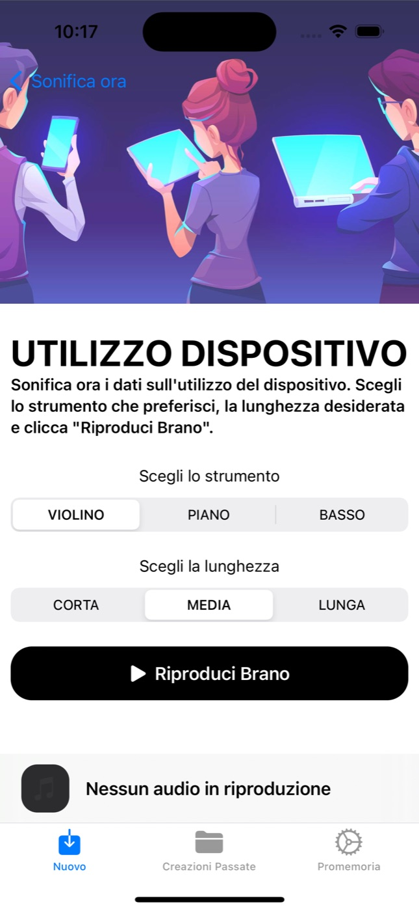
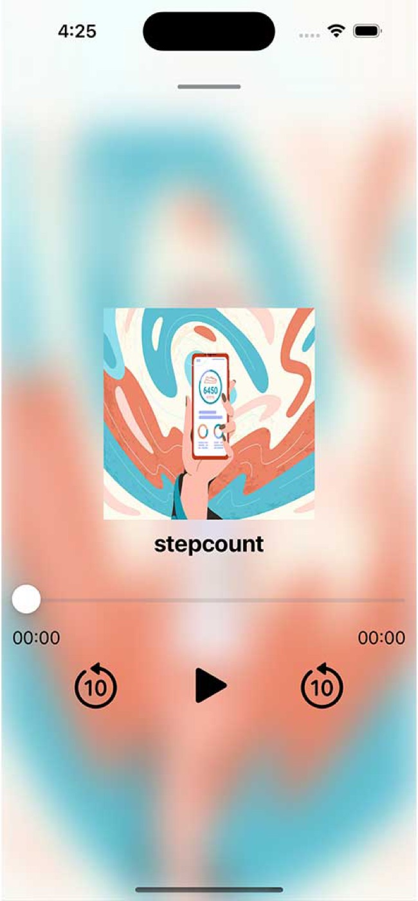

SoundSense
Raising Awareness About Digital Wellbeing: Data Visualization and Sonification in a Mobile Application. An iPhone app that turns your steps, heart rate and screen time into short pieces of music.
- Role
- Author
- When
- 2023
- Context
- BSc thesis, Università di Bologna
- Supervisors
- Dr. Catia Prandi, Dr. Chiara Ceccarini (co-supervisor)
- Stack
- Swift, SwiftUI, HealthKit, Python, Flask, SQLAlchemy, music21
The idea
Phones and social media get blamed for a lot. Digital wellbeing asks a more useful question: how does the technology we use affect our health, and how do we keep the good parts?
Charts are the usual answer, but they assume you're comfortable reading numbers, and they leave out people who can't see them. Sonification turns data into sound instead. I wanted to find out whether hearing your own data makes it easier to notice your habits.
What I built
- An iOS app in Swift and SwiftUI. It reads step count, distance, heart rate, walking speed and screen time from HealthKit. You pick an instrument (violin, piano or bass) and a length, and it plays the result. Past tracks are saved, and a notification reminds you to listen.
- A small Flask API in Python. It maps the data to notes with music21, midiutil and audiolazy, renders the MIDI to FLAC, and stores every track with SQLAlchemy.
Screenshots



